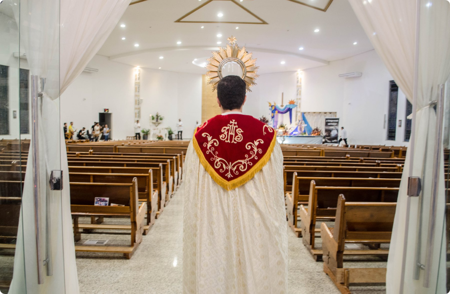

1940
1967
1978
1997
2000
2015
A história da paróquia tem início na década de 1940, com os primeiros loteamentos do bairro Maristela por Antônio Lopes de Azevedo. Durante a divisão, um espaço foi doado por Francisco de Paula Goulart para a construção da futura igreja. O local foi abençoado em 1956, por dois missionários redentoristas que estavam em missão pelo bairro, padre Geraldo e padre Júlio.
A união da comunidade pôde ser percebida desde o começo. Movida pela fé, a mesma se dedicou promovendo quermesses, com doações e ajuda de benfeitores, para que primeira capela fosse construída, que foi intitulada como “Capela Nossa Senhora do Carmo”, vinculada a paróquia São Sebastião, atualmente catedral. O primeiro a abraçar a causa e assumir a nova capela foi padre Antônio Mendes Barata, com missas apenas aos domingos.
Com o crescimento do número de fiéis, em 1967, a capela precisou passar por uma reforma para ampliação. Logo após, a comunidade foi elevada a paróquia pelo Bispo Diocesano de Presidente Prudente, Dom José de Aquino Pereira. Durante a cerimônia de elevação foi empossado o primeiro pároco, padre João Salgari. Assim surgiu a Paróquia Nossa Senhora do Carmo.
A história da paróquia tem início na década de 1940, com os primeiros loteamentos do bairro Maristela por Antônio Lopes de Azevedo. Durante a divisão, um espaço foi doado por Francisco de Paula Goulart para a construção da futura igreja. O local foi abençoado em 1956, por dois missionários redentoristas que estavam em missão pelo bairro, padre Geraldo e padre Júlio.
A união da comunidade pôde ser percebida desde o começo. Movida pela fé, a mesma se dedicou promovendo quermesses, com doações e ajuda de benfeitores, para que primeira capela fosse construída, que foi intitulada como “Capela Nossa Senhora do Carmo”, vinculada a paróquia São Sebastião, atualmente catedral. O primeiro a abraçar a causa e assumir a nova capela foi padre Antônio Mendes Barata, com missas apenas aos domingos.
Em 1978, aos 63 anos, padre João Salgari faleceu, com um legado de 40 anos de sacerdócio. Um ano depois, padre Aurélio da Silva Ribeiro assumiu a responsabilidade da paróquia e logo foi nomeado pároco. Entretanto, três anos após sua nomeação, teve que assumir o pastoreio da Paróquia Nossa Senhora Aparecida, da cidade de Tarabai. Lá, Padre Aurélio foi nomeado Vigário Ecônomo da comunidade.
Com isso, vários religiosos passaram pela paróquia, como Padre Silvio Ghiotto, Padre Jésus Pereira dos Anjos e o ainda seminarista, Lindolpho Antônio da Silva. Até que em 1984, padre Aurélio retornouà comunidade.
Para auxiliar padre Aurélio em sua jornada paroquial, padre Antônio Sérgio Girotti (Tutti), foi designado Vigário Paroquial, em 1997. Dois anos depois, padre Tutti também foi nomeado por Dom Agostinho como administrador paroquial. No mesmo ano, teve início o Acampamento FAC (Formação de Adolescentes Cristãos), o Acampamento Sênior e o Acampamento JOAM (Jovens Adolescentes em Missão)
Com a comunidade cada vez mais ativa e numerosa, houve a necessidade de um espaço maior para a igreja. Com isso, em 2000, a estrutura foi demolida para dar lugar a uma nova e mais ampla. Em meio a toda essa mudança, a comunidade, sob orientação de padre Tutti, organizou no Rancho Quarto de Milha, uma grande celebração do Ano da Graça do Senhor Jubileu 2000. Marcado pelo projeto “Evangelização 2000”, o evento reuniu cerca de 25 mil pessoas.
Em setembro de 2004, durante uma missa solene, a nova Igreja Matriz foi inaugurada. Dom José Maria Libório Camino Saracho, bispo da época, presidiu a celebração, concedendo o título de pároco ao padre Tutti.
No dia 16 de junho de 2011, a comunidade da Maristela, sofreu uma grande perda com o falecimento do padre Aurélio da Silva Ribeiro, aos 83 anos.
Em 2015, o Padre Rodrigo Gomes de Moreno assumiu a paróquia e manteve a força da evangelização e formação cristã conduzida por 18 anos pelo padre Tutti. Além disso, renovou os acampamentos, marca da paróquia em todo Brasil, e deu continuidade ao trabalho de reforma do Centro de Formação Católica.
A paróquia, conhecida na cidade como “Igreja Maristela”, é reconhecida pela participação ativa da juventude e a grande alegria em suas celebrações. Os trabalhos de evangelização que brotam das pastorais e movimentos servem como laboratório para muitas comunidades a partir das realizações de acampamentos, cursos, formações e espiritualidades.